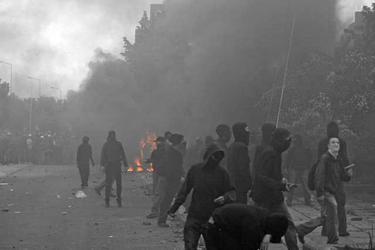

Failed States: A Threat to World Peace

The term “Failed State” is used to describe a country perceived to have failed to meet some of the fundamental responsibilities of a sovereign nation and is characterized by social, political and economic failure. With African countries such as Somalia, Chad and Sudan leading the pack, the number of failed states has increased drastically over that past decade. The mere labelling of a country as a failed state has become highly controversial as their alleged threat to world peace is becoming an increasingly magnified issue on the global stage. President J. Carter claimed they “are breeding grounds for, money laundering, mass refugee flows and illegal immigration” as well as international terrorism, and other international catastrophes. But who is responsible for finding solutions to these catastrophes? While the few contrarians often base their arguments on the fact that many of the acts of terrorism, while they may be planned in failed states, rely mainly on the resources of developed countries, and that money laundering and other crimes of fraud are much more prevalent in countries with more economic stability. Some even claim that the term itself, “Failed State”, is an incoherent political construct that only leads to misguided policy making. Failed states are an international dilemma and one must ask, what, if anything, can be done about them, and who is responsible for doing it?
—Emma Watson and Elie Waitzer
David A. Welch is CIGI chair of global security at the Balsillie School of International Affairs (BSIA). He is also a professor of political science at the University of Waterloo, and has received three major teaching awards in the last two years.
Dr. Welch is an accomplished author. Currently, he is completing a book on the Vietnam War and will subsequently begin a major project on security theory. He recently edited a volume entitled Japan as a ‘Normal Country’? A Nation in Search of Its Place in the World. His other books include: Vietnam If Kennedy Had Lived (2009), which he co-authored with James G. Blight and janet M. Lang; The Cuban Missile Crisis: A Concise History (2007), co-authored with Don Munton; Painful Choices: A Theory of Foreign Policy Change (2005), which was the inaugural winner of the International Studies Association ISSS Book Award for the best book published in 2005 or 2006; Decisions, Decisions: The Art of Effective Decision-Making (2001); Intelligence and the Cuban Missile Crisis (1998), which he co-edited with James G. Blight; Justice and the Genesis of War (1993), which earned him the 1994 Edgar S. Furniss Award for an Outstanding Contribution to National Security Studies; On the Brink: Americans and Soviets Reexamine the Cuban Missile Crisis (1st ed. 1989; 2nd ed. 1990); and Cuba on the Brink: Castro, The Missile Crisis, and the Soviet Collapse (1st ed. 1993; 2nd ed. 2002).
He is also widely published in international journals. Dr. Welch's articles have appeared in Asian Perspective, Ethics and International Affairs, Foreign Affairs, The Georgetown Journal of International Affairs, Intelligence and National Security, International Security, International Journal, International Studies Quarterly, The Journal of Conflict Resolution, The Mershon International Studies Review, The Review of International Studies and Security Studies. He earned his A.M. and PhD from Harvard University, and his BA (with Highest Distinction) from Trinity College, University of Toronto.
—David Welch, CIGI Chair of Global Security (BSIA) & Professor (University of Waterloo)
Though I teach courses in international relations and the politics of developing areas (specifically Africa), my research interests have focused largely on problems and prospects for conflict and conflict resolution in African states. My earlier research concerned the difficulties in negotiating and implementing power-sharing agreements in the aftermath of civil wars. More recently, I have been considering the opposite approach, the possibility that secession or, more radically, the redrawing of Africa’s borders, might provide an alternative to conflict resolution. Both of these issues have been informed by an approach to politics which borrows from political realism. My most recent publication, an edited book, is a collection of papers which considers the emergence of political entities in different parts of the world which have many of the attributes of statehood but do not yet enjoy recognition from the international community. They are in effect ‘states-within-states’.
I am currently working on a project which integrates these themes of political realism, power-sharing, and secession. I am considering recent civil wars in three African states — Angola, Ethiopia, and Somalia — and the way in which rebel movements and governments consider one or more strategies of integration, secession, or domination as means for dealing with insecurity in the midst of state collapse and anarchy.
—Ian Spears, Professor (University of Guelph)
—Emma Watson and Elie Waitzer
 |
Dr. Welch is an accomplished author. Currently, he is completing a book on the Vietnam War and will subsequently begin a major project on security theory. He recently edited a volume entitled Japan as a ‘Normal Country’? A Nation in Search of Its Place in the World. His other books include: Vietnam If Kennedy Had Lived (2009), which he co-authored with James G. Blight and janet M. Lang; The Cuban Missile Crisis: A Concise History (2007), co-authored with Don Munton; Painful Choices: A Theory of Foreign Policy Change (2005), which was the inaugural winner of the International Studies Association ISSS Book Award for the best book published in 2005 or 2006; Decisions, Decisions: The Art of Effective Decision-Making (2001); Intelligence and the Cuban Missile Crisis (1998), which he co-edited with James G. Blight; Justice and the Genesis of War (1993), which earned him the 1994 Edgar S. Furniss Award for an Outstanding Contribution to National Security Studies; On the Brink: Americans and Soviets Reexamine the Cuban Missile Crisis (1st ed. 1989; 2nd ed. 1990); and Cuba on the Brink: Castro, The Missile Crisis, and the Soviet Collapse (1st ed. 1993; 2nd ed. 2002).
He is also widely published in international journals. Dr. Welch's articles have appeared in Asian Perspective, Ethics and International Affairs, Foreign Affairs, The Georgetown Journal of International Affairs, Intelligence and National Security, International Security, International Journal, International Studies Quarterly, The Journal of Conflict Resolution, The Mershon International Studies Review, The Review of International Studies and Security Studies. He earned his A.M. and PhD from Harvard University, and his BA (with Highest Distinction) from Trinity College, University of Toronto.
—David Welch, CIGI Chair of Global Security (BSIA) & Professor (University of Waterloo)
I am currently working on a project which integrates these themes of political realism, power-sharing, and secession. I am considering recent civil wars in three African states — Angola, Ethiopia, and Somalia — and the way in which rebel movements and governments consider one or more strategies of integration, secession, or domination as means for dealing with insecurity in the midst of state collapse and anarchy.
—Ian Spears, Professor (University of Guelph)